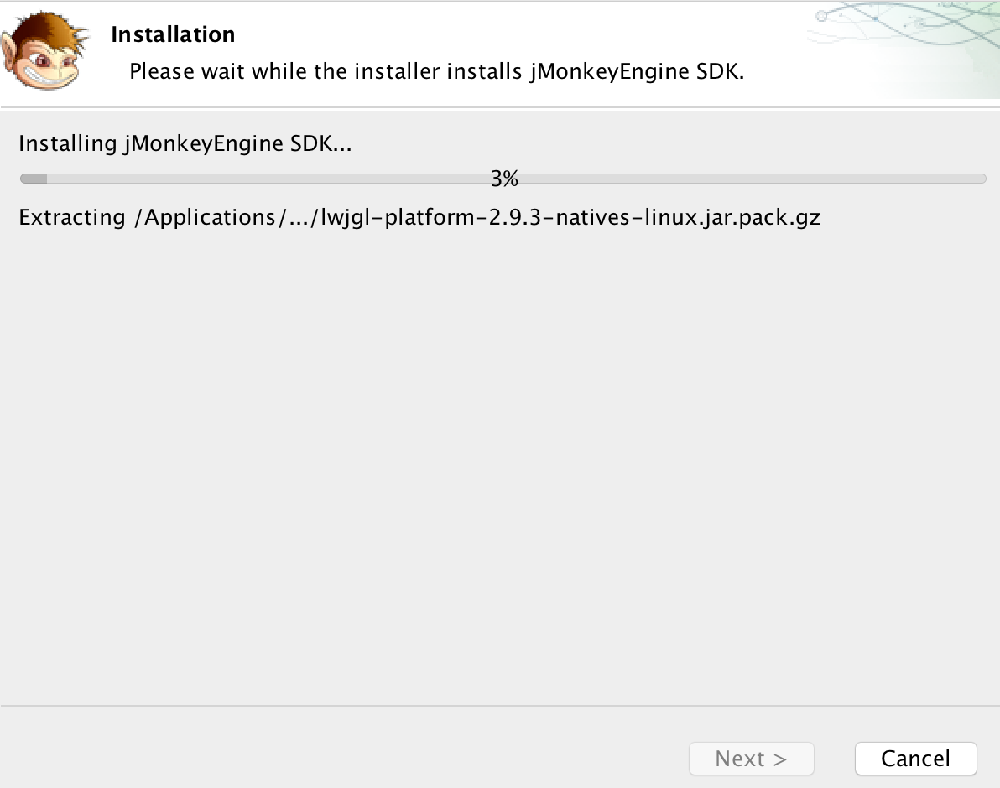
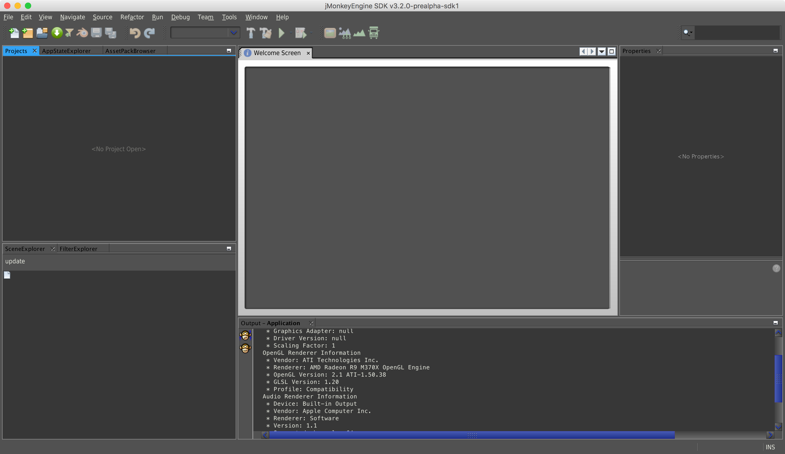

3.3.2.- JMonkey Engine.
JMonkey Engine
JMonkey es un motor para el desarrollo de juegos 3D basado en Java. Es compatible con LWJGL y la potencialidad unida a la comunidad de desarrolladores que lo sostienen lo hacen una opción muy interesante.
Además del motor de juegos, JMonkey Engine contiene su propio IDE para trabajar con JMonkeyEngine.
Lo puedes descargar desde aquí.
Una vez descargado procedemos a realizar su instalación para poder utilizar jMonkeyEngine.

. Proceso de instalación de JMonkeyEngine. (CC0)
Una vez hemos instalado el JMonkey podemos comenzar a trabajar con su propio IDE, el cual se descarga de manera conjunta con el motor de videojuegos y las distintas librerías de desarrollo.

. IDE de JMonkey Engine. (CC0)
Lightweight Java Game Library. Librería ligera para el desarrollo de videojuegos.